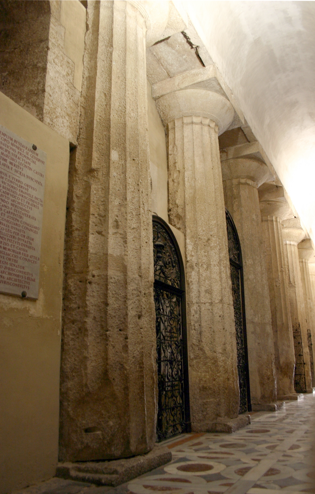

Two decks, one resource at a time
Sources: the article, nothing else
Prompt B: content rules
→ deck 1
Sources: the article + deck 1 (if it passed the check) + the real photos
Prompt C: B + keep deck 1's structure + only the uploaded photos + the UNIPG theme
→ deck 2
The source
Jo'anne Van Ooijen, Resilient Matters: The Cathedral of Syracuse as an Architectural Palimpsest, Architectural Histories 7(1), 2019, DOI 10.5334/ah.65. Open access, CC BY.
- 1notebook.google.com with your @unipg.it account → Create new notebook
- 2Add sources → Websites → paste the direct PDF link:
https://journal.eahn.org/article/7590/galley/21444/download/ - 3The summary in the centre talks about the Cathedral of Syracuse? The source is in.
Round 1 · one source, prompt B
Studio → Presentation opens the dialog. Presenter slides (right-hand card), English, sources: only the article. The dialog forgets format and language every time: check them.
Create a 7-slide presentation on this article for a non-specialist academic audience. Rules: use only what is written in the uploaded article; do not add facts, dates, names, numbers or examples that are not in the text. Every slide title is a full sentence stating what the article claims, not a topic label. Where the author is tentative (suggests, may, possibly), keep the same caution; never turn a hypothesis into a proven fact. Do not generate images of places, buildings or people; use only text, simple diagrams or a timeline. The last slide states the limits and open questions the author acknowledges.
Close the dialog. While it generates, check the claims in chat:
Using only the uploaded document, and citing the page for each point: 1. What is the research question? 2. What thesis does the author defend? Write it as one sentence with a verb. 3. What are the three or four claims the thesis rests on? 4. Which limits does the author state explicitly?
Click every number: the passage opens. If it says less than the sentence, that sentence does not go on a slide.
Check a deck: five questions
| # | Look for |
|---|---|
| 1 | A picture of a real place or person the tool made up |
| 2 | A number or date you cannot find in the article |
| 3 | A title that is a topic instead of a claim |
| 4 | A verb stronger than the text: suggests → proves. This is the one that matters. |
| 5 | A theme that holds on some slides and not on others |
Round 2 · more sources, prompt C
1 · Deck 1 becomes a source, if it passed
⋮ → Download → PDF → Add sources → Upload file. Only after you checked it: once uploaded, the model treats the deck as true as the article, mistakes included.
2 · The real cathedral, not a drawn one
Download both photos, then Add sources → Upload file. An image cannot be added by URL: the link fails.



3 · Generate with all the sources selected
Create a 7-slide presentation on this article for a non-specialist academic audience. Rules: use only what is written in the uploaded article; do not add facts, dates, names, numbers or examples that are not in the text. Every slide title is a full sentence stating what the article claims, not a topic label. Where the author is tentative (suggests, may, possibly), keep the same caution; never turn a hypothesis into a proven fact. If a presentation is among the sources, keep its order and its titles unless the article contradicts them. For pictures of the cathedral use only the uploaded photographs, with their credit on the slide; never generate an image of a building, a place or a person. The last slide states the limits and open questions the author acknowledges. Visual theme, University of Perugia, apply it to every slide: white background #FFFFFF; titles and main accent in UNIPG blue #27348B; red #E30613 only for one key word per slide; grey #8D8F95 for captions and sources; light grey #E8E8E8 for boxes and table headers. Font: Roboto for everything. A thin blue rule under each title. Keep the top-right corner empty for the university logo. Flat design: no gradients, no shadows.
A theme is hex codes and a font
Adjectives ("elegant, institutional, blue") give a different result every time. Codes give the same one.
| UNIPG | Value |
|---|---|
| blue | #27348B |
| red | #E30613 |
| grey | #8D8F95 |
| light grey | #E8E8E8 |
| font | Roboto |
Read from unipg.it: the site's CSS and the logo .svg. For your conference: the colours are in its template (.potx, .sty), its website (browser → Inspect), or its logo .svg (fill="#…"). Swap them into prompt C.
No generations left? Apply the theme to an existing deck with Rivedi, one instruction per slide:
Restyle only, keep every word, diagram and the layout: white background #FFFFFF; title in UNIPG blue #27348B, Roboto bold, with a thin blue rule under it; one key word in red #E30613; captions in grey #8D8F95; boxes in light grey #E8E8E8; diagram colours only blue #27348B and grey; Roboto for all text; top-right corner left empty.
Rivedi: one slide, one instruction
Open a deck → Rivedi → click a slide → one instruction → Generate revised presentation. It makes a copy "(2)", the original stays. About 2 minutes for one slide, 15 for seven. It does not count toward your three.
Shorten the title to at most 10 words, keeping its meaning. Keep layout, colours and text exactly as they are.Replace the title with: "…". Keep layout and image.Turn the bullet list into two short sentences. Keep the diagram.
Export, and out to Google Slides
- ⋮ → Download → PDF, every version you like: you cannot rerun one.
- ⋮ → Download → PowerPoint (.pptx) → Google Drive → Open with Google Slides, or File → Import slides into your deck.
- Each slide arrives as one picture: you edit around it, not inside it.
The decks generated this morning
Same article, 29 September 2026. Each PDF is what the tool exported.
| Deck | What to look at |
|---|---|
| A · one-line prompt | a generated photo of the cathedral: right captions, invented picture |
| 1 · prompt B | titles as claims, the author's "may" kept, diagrams instead of photos |
| 1 again · second account | same prompt, different deck: titles back to topic labels |
| 1 + UNIPG theme via Rivedi | same words, new look; slide 4 kept the old font |
| 1 + a limestone palette | hex codes respected; duplicated text inside the timeline image |
| …after Rivedi on slide 1 · .pptx | one instruction, one slide changed; the .pptx is seven pictures |
Three rules
- The prompt is the theme file. Codes, not adjectives. Constraints, not wishes.
- Rivedi fixes form, the chat fixes content.
- Every deck is a draw. Export it, read every slide, keep the good ones.
Declare it: "Slides drafted with Gemini Notebook from the author's article, checked and edited by the author."